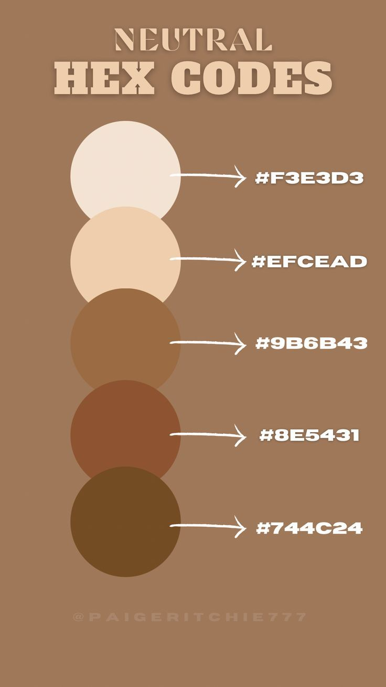

Site Name: Garden City Chambers of Commerce
Represents the great city of Garden
Purpose
The purpose of this website is to be a guide for residents or future residents. This will give the residents easy access to any events happening in Garden. It will give any useful information about the city and the great people behind it who work hard to keep it afloat.
Scenarios
Who are the board directors? Knowing this information helps us know how to contact the right people. What does living here look like? Helps to inform about rent/housing or the general area. What are schools like there? gives great information about the wonderful staff and schools in the town.
Color Schema
The lightest color will be the background color. The darkest color will be a header and footer color.
Typography
"DM Sans", sans-serif & "Figtree", sans serif